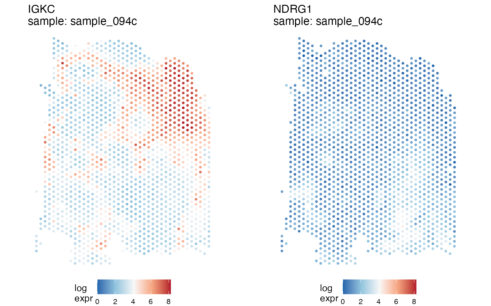
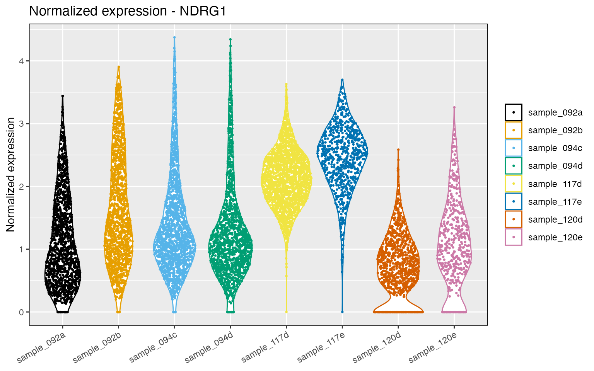
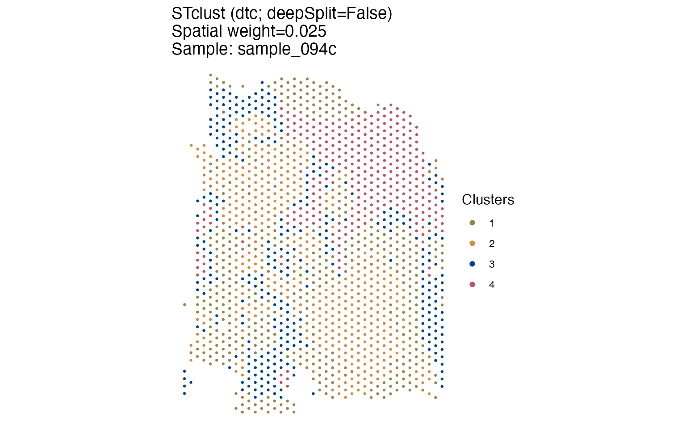

vignettes/ondisk_stlists.Rmd
ondisk_stlists.RmdAn STlist stores the gene expression counts of all samples in the
study at the same time. This is what allows functions such as
SThet and compare_SThet to compare samples,
but it also means that the memory required by an STlist grows with the
number of samples and the number of spots or cells in each one. A few
Visium samples are easily handled in a laptop. Several dozen samples, or
a CosMx experiment with hundreds of thousands of cells, may not be, and
the analysis then ends before it starts, when the object is created.
For those cases, the spatialGE
package provides the option of keeping the counts on disk instead of in
memory. The function STlist_to_disk writes the count
matrices to parquet files,
leaving in the STlist a small description of each file. The counts are
then read back as the analysis functions request them, a few genes at a
time. The function STlist_to_memory reverses the process.
The rest of the object (spot coordinates, spot-level annotations, sample
meta data, and the results of any analysis) is not affected and remains
in memory.
Note that this option is turned off by default. An STlist created in
the usual way behaves exactly as described in the other tutorials, and
none of what follows is required to use spatialGE.
It is also important to be clear about what this option provides. It makes it possible to hold and analyze a data set that would not fit in memory. It does not make the analysis faster. The functions still bring counts into memory in order to compute on them, so an on-disk STlist is somewhat slower than an in-memory one, the difference being that the counts are not all in memory at once. Users whose data sets fit comfortably in memory are better off leaving them there.
To follow the same data used in the basic functionality tutorial, we use the Visium data set from Bassiouni et al. (2023), which includes triple negative breast cancer biopsies. Eight samples from four patients are used here. The data is available at our spatialGE_Data GitHub repository, and will be pulled from there during this tutorial.
Load the spatialGE package:
As in the other tutorials, the data will be deposited in a temporary directory:
lk='https://github.com/FridleyLab/spatialGE_Data/raw/refs/heads/main/tnbc_bassiouni.zip?download='
visium_tmp = tempdir()
unlink(visium_tmp, recursive=TRUE)
dir.create(visium_tmp)
tryCatch({ # In case data is not available from network
download.file(lk, destfile=paste0(visium_tmp, '/', 'tnbc_bassiouni.zip'), mode='wb')
zip_tmp = list.files(visium_tmp, pattern='tnbc_bassiouni.zip$', full.names=TRUE)
unzip(zipfile=zip_tmp, exdir=visium_tmp)
net_check <<- TRUE
}, error = function(e) {
message("Could not download data. Are you connected to the internet?")
net_check <<- FALSE
})
visium_folders <- list.dirs(paste0(visium_tmp, '/tnbc_bassiouni'), full.names=TRUE, recursive=FALSE)
clin_file <- list.files(paste0(visium_tmp, '/tnbc_bassiouni'), full.names=TRUE, recursive=FALSE, pattern='clinical')The STlist is created in the usual way, and the quality control and normalization steps are run while the counts are still in memory:
tnbc <- STlist(rnacounts=visium_folders, samples=clin_file, cores=2)
#> Found Visium data
#> Found 8 Visium samples
#> Data read completed
#> Matching gene expression and coordinate data...
#> Completed STlist!
tnbc <- filter_data(tnbc, spot_minreads=5000, spot_mingenes=1000, spot_maxreads=150000)
#> filter_data: removed 0 sample(s), 812 spot(s)/cell(s) and 0 gene(s).
tnbc <- transform_data(tnbc, method='log', cores=2)The order of these steps matters. The functions
filter_data and transform_data do not simply
read the count matrices, they rewrite them: filter_data
removes spots and genes, and transform_data adds an
entirely new matrix of normalized values. Both are therefore run before
the counts are moved to disk.
In other words, an on-disk STlist is better thought of as a prepared
data set that analyses are run on, rather than as an object that is
still being assembled. If a filtering threshold has to be reconsidered
later, the object can be brought back into memory with
STlist_to_memory (shown near the end of this tutorial),
modified there, and written out again.
The function STlist_to_disk takes the STlist and a
directory to write into. The directory is created if it does not
exist:
store_dir <- paste0(visium_tmp, '/tnbc_store')
tnbc_disk <- STlist_to_disk(tnbc, root=store_dir)The result is an STlist like any other, except that its two count
slots now point at files. The function is_backed reports
which of the two forms an object is in:
Printing the object works as before, and so does
summarize_STlist. Neither of them needs to read the counts,
because the number of genes and spots per sample is recorded when the
store is written:
tnbc_disk
#> Spatial Transcriptomics List (STlist).
#> 8 spatial array(s):
#> sample_117d (1938 ROIs|spots|cells x 23755 genes)
#> sample_117e (727 ROIs|spots|cells x 21662 genes)
#> sample_120d (1029 ROIs|spots|cells x 21886 genes)
#> sample_120e (511 ROIs|spots|cells x 20389 genes)
#> sample_092a (1258 ROIs|spots|cells x 24227 genes)
#> sample_092b (1314 ROIs|spots|cells x 23511 genes)
#> sample_094c (1536 ROIs|spots|cells x 24581 genes)
#> sample_094d (1379 ROIs|spots|cells x 24167 genes)
#>
#> 3 variables in sample-level data:
#> patient_id, neoadjuvant, overall_survival_days
summarize_STlist(tnbc_disk)
#> # A tibble: 8 × 9
#> sample_name spotscells genes min_counts_per_spotcell mean_counts_per_spotcell
#> <chr> <int> <int> <dbl> <dbl>
#> 1 sample_117d 1938 23755 5007 35447.
#> 2 sample_117e 727 21662 5703 35798.
#> 3 sample_120d 1029 21886 5016 17472.
#> 4 sample_120e 511 20389 5003 14633.
#> 5 sample_092a 1258 24227 5018 44201.
#> 6 sample_092b 1314 23511 5025 36283.
#> 7 sample_094c 1536 24581 5457 45746.
#> 8 sample_094d 1379 24167 5193 37460.
#> # ℹ 4 more variables: max_counts_per_spotcell <dbl>,
#> # min_genes_per_spotcell <int>, mean_genes_per_spotcell <dbl>,
#> # max_genes_per_spotcell <int>Looking at what was written is useful, since the files are ordinary parquet and can be read with other tools if needed.
Each sample gets a sub-directory containing one file per populated slot, so eight samples with raw and normalized counts result in sixteen files:
head(list.files(store_dir, recursive=TRUE), 4)
#> [1] "samples/0001-43ffa0e30000/counts.parquet"
#> [2] "samples/0001-43ffa0e30000/tr_counts.parquet"
#> [3] "samples/0002-42ff9f500000/counts.parquet"
#> [4] "samples/0002-42ff9f500000/tr_counts.parquet"
length(list.files(store_dir, recursive=TRUE))
#> [1] 16Note that the sub-directory names are not the sample names. Sample names are allowed to contain characters that file paths are not, so a position and a short hash are used instead, and the readable name is kept inside the file description rather than in the path.
That description is what now sits in the counts slot in place of a matrix. Printing it gives a one-line summary and the path to the file:
tnbc_disk@counts[['sample_094c']]
#> <sge_manifest> sample_094c: 24581 genes x 1536 cells, 11516088 nonzero, gen 1
#> /private/var/folders/63/qj4bjln95bs911vg920503rh001s8k/T/Rtmpz9m80Y/tnbc_store/samples/0007-2ceec9e00000/counts.parquetThe slot @misc records where the store is and in which
order the samples were written:
tnbc_disk@misc[['store']]
#> $root
#> [1] "/private/var/folders/63/qj4bjln95bs911vg920503rh001s8k/T/Rtmpz9m80Y/tnbc_store"
#>
#> $sample_order
#> [1] "sample_117d" "sample_117e" "sample_120d" "sample_120e" "sample_092a"
#> [6] "sample_092b" "sample_094c" "sample_094d"
#>
#> $schema_ver
#> [1] 1
#>
#> $portable
#> [1] FALSEThe files themselves hold the counts in “long” (also called triplet, or COO) form rather than as a rectangular matrix. Every non-zero value is one row, giving the gene, the spot, and the value:
head(arrow::read_parquet(tnbc_disk@counts[['sample_094c']]$path), 4)
#> # A tibble: 4 × 3
#> gene_idx cell_idx value
#> <int> <int> <dbl>
#> 1 1 20 1
#> 2 1 184 1
#> 3 1 247 2
#> 4 1 305 1There are two reasons for this layout. Counts from these platforms are mostly zeros, and the long form stores only the values that are present, which is the same reason an STlist uses sparse matrices in memory. The rows are also sorted by gene, so that the values belonging to one gene are together in the file rather than spread throughout it.
Note that gene_idx and cell_idx are
positions rather than names. The gene and spot names are kept in the
file description, which is the only place they are recorded. The reason
is that a gene with a count of zero in every spot of a sample has no
rows at all in the long form, so a gene list rebuilt from the contents
of the file would be missing it. Genes like that are not unusual, and
the default settings of filter_data do not remove them.
The clearest way to see the effect is to compare the size of the count slots before and after:
format(object.size(tnbc@counts) + object.size(tnbc@tr_counts), units='MB')
#> [1] "1445.9 Mb"
format(object.size(tnbc_disk@counts) + object.size(tnbc_disk@tr_counts), units='MB')
#> [1] "25 Mb"For these eight samples, the count matrices go from roughly 1.4 GB to about 25 MB, since what is left in the object is eight short descriptions instead of sixteen matrices. The counts themselves have of course not disappeared. They are on disk, where the store occupies a few hundred megabytes:
round(sum(file.info(list.files(store_dir, recursive=TRUE, full.names=TRUE))$size) / 1024^2, 1)
#> [1] 346.8The reduction applies to the count matrices only. The spot
coordinates and annotations in @spatial_meta, the per-gene
statistics in @gene_meta, and whatever is stored in
@misc all remain in memory, and in a large study these are
not negligible either. This is easier to see by comparing the size of
the whole object instead of only the count slots:
format(object.size(tnbc), units='MB')
#> [1] "2184.1 Mb"
format(object.size(tnbc_disk), units='MB')
#> [1] "763.2 Mb"Analysis functions are called exactly as they would be on an in-memory STlist. The counts are read from the files when each function asks for them, and the results are the same.
tnbc_disk <- SThet(tnbc_disk, genes=c('NDRG1', 'IGKC'), method='moran', cores=2)
#> SThet started.
#> Calculating spatial weights...
#> SThet completed in 0.04 min.
get_gene_meta(tnbc_disk, sthet_only=TRUE)
#> # A tibble: 16 × 10
#> sample patient_id neoadjuvant overall_survival_days gene gene_mean
#> <chr> <dbl> <chr> <dbl> <chr> <dbl>
#> 1 sample_117d 2 yes 2733 IGKC 3.07
#> 2 sample_117d 2 yes 2733 NDRG1 2.13
#> 3 sample_117e 2 yes 2733 IGKC 2.54
#> 4 sample_117e 2 yes 2733 NDRG1 2.45
#> 5 sample_120d 8 no 1453 IGKC 2.98
#> 6 sample_120d 8 no 1453 NDRG1 0.672
#> 7 sample_120e 8 no 1453 IGKC 2.77
#> 8 sample_120e 8 no 1453 NDRG1 1.05
#> 9 sample_092a 9 no 308 IGKC 0.371
#> 10 sample_092a 9 no 308 NDRG1 1.11
#> 11 sample_092b 9 no 308 IGKC 0.105
#> 12 sample_092b 9 no 308 NDRG1 1.63
#> 13 sample_094c 14 yes 718 IGKC 4.06
#> 14 sample_094c 14 yes 718 NDRG1 1.38
#> 15 sample_094d 14 yes 718 IGKC 3.23
#> 16 sample_094d 14 yes 718 NDRG1 1.25
#> # ℹ 4 more variables: gene_stdevs <dbl>, vst.variance.standardized <dbl>,
#> # moran_i <dbl>, geary_c <lgl>Since this is the property the whole mechanism depends on, it is worth verifying rather than assuming. Running the same analysis on the in-memory object returns identical statistics:
tnbc <- SThet(tnbc, genes=c('NDRG1', 'IGKC'), method='moran', cores=2)
#> SThet started.
#> Calculating spatial weights...
#> SThet completed in 0 min.
identical(get_gene_meta(tnbc_disk, sthet_only=TRUE)$moran_i,
get_gene_meta(tnbc, sthet_only=TRUE)$moran_i)
#> [1] TRUEQuilt plots of gene expression are produced in the same way as well:
quilts1 <- STplot(tnbc_disk,
genes=c('NDRG1', 'IGKC'),
samples='sample_094c',
color_pal='BuRd',
ptsize=0.8)
ggpubr::ggarrange(plotlist=quilts1, nrow=1, ncol=2, legend='bottom')
The distribution of expression of a gene across samples is obtained in the same way too:
dp <- distribution_plots(tnbc_disk, genes='NDRG1')
dp[['NDRG1']]
And so is the spatially-informed clustering of
STclust:
tnbc_disk <- STclust(tnbc_disk, ks='dtc', ws=c(0, 0.025), cores=2)
#> STclust started...
#> Updating STlist with results...
#> STclust completed in 0.27 min.
cluster_p <- STplot(tnbc_disk, samples='sample_094c', ws=0.025, color_pal='highcontrast')
cluster_p[[1]]
What this costs is time. Every read of a count matrix now involves the file system, so a function that reads the counts several times pays that cost several times. The difference is noticeable even with a data set of this size:
system.time(SThet(tnbc, genes='NDRG1', method='moran', cores=2))['elapsed']
#> SThet started.
#> Calculating spatial weights...
#> SThet completed in 0 min.
#> elapsed
#> 0.229
system.time(SThet(tnbc_disk, genes='NDRG1', method='moran', cores=2))['elapsed']
#> SThet started.
#> Calculating spatial weights...
#> SThet completed in 0.02 min.
#> elapsed
#> 1.41A difference of a few fold is typical, and it is the trade mentioned at the beginning of this tutorial. The analysis becomes possible on data that would not otherwise fit in memory, but it takes longer to run.
The store is a directory of files, and the STlist only holds paths to
them. The function validate_store checks that the
arrangement is still intact, reading only the file headers:
validate_store(tnbc_disk)Nothing is printed, which is the intended result: the function
returns TRUE invisibly when everything checks out, and
stops with a message when it does not. It confirms that every file is
where its description says it is and has not changed since it was
written, that the samples are still in the recorded order, and that the
transformed counts remain a subset of the raw counts. Passing
deep=TRUE additionally reads the data to check the stored
positions, which is slower but more thorough:
validate_store(tnbc_disk, deep=TRUE)It is useful to see what the function reports when something is in fact wrong. In the following block, a path is changed to a file that does not exist, which is what a deleted or relocated store looks like from within the STlist:
broken <- tnbc_disk
broken@counts[['sample_094c']][['path']] <- paste0(visium_tmp, '/gone.parquet')
try(validate_store(broken))
#> Error : spatialGE exception: spatialGE store: A parquet file recorded in the manifest is missing. Has the store directory moved?That is the same error any analysis would raise on the first read of
that sample, only reported up front and naming the likely cause instead
of surfacing from somewhere inside arrow.
When a store is no longer needed, or when the object has to be
reshaped again, STlist_to_memory reads every matrix
back:
tnbc_back <- STlist_to_memory(tnbc_disk)
is_backed(tnbc_back)
#> [1] FALSEThe round trip is exact rather than approximate. The long form stores the values themselves, and the dimensions and names come from the file description, so nothing is estimated on the way back:
identical(tnbc_back@counts, tnbc@counts)
#> [1] TRUEBecause the counts are now files rather than part of the object, there are a few consequences that are better known in advance.
The object is not self-contained. Saving an on-disk
STlist with saveRDS stores the paths, not the counts. If
that object is loaded in a session where the store has been moved or
deleted, the first function that tries to read counts will fail, and
validate_store reports the problem up front. There is
currently no way to point an existing object at a store in a new
location, so the store should be written somewhere it can remain.
A store under tempdir() will not survive the
session. The examples here write to a temporary directory,
which is appropriate for a tutorial but not for an actual analysis. The
store records whether it was written to a location that can outlive the
session:
tnbc_disk@misc[['store']][['portable']]
#> [1] FALSEThe value is FALSE here because store_dir
is inside tempdir(). For an analysis that is meant to be
kept, users should provide STlist_to_disk with a directory
of their own, keeping in mind that the directory has become part of the
data.
The object has to be prepared first. As described
above, filter_data and transform_data rewrite
the count matrices, so they are run before STlist_to_disk.
The same applies to subsetting an STlist by sample with
x[i]. In those cases, the object is brought back into
memory, modified there, and written out again if the result is to be
kept.
Writing a store does not remove the original.
STlist_to_disk returns a new STlist and leaves the one it
was given untouched, which is why both tnbc and
tnbc_disk are used throughout this tutorial. That is
convenient for comparison, but keeping both of them defeats the purpose.
In practice, the in-memory object is removed once the store has been
written.
spatialGE?
Yes, and that is part of the reason for using this format. The files
are ordinary parquet with three columns, so they can be read by anything
that reads parquet (arrow in R, pyarrow or
pandas in Python, or duckdb in either
language).
The one thing to carry across is that gene_idx and
cell_idx are positions rather than names, counting from 1.
The names are held in the STlist, in the description that replaced each
matrix:
mft <- tnbc_disk@counts[['sample_094c']]
head(mft$genes, 3)
#> [1] "AL627309.1" "AL627309.5" "AP006222.2"
head(mft$cells, 3)
#> [1] "CAGCGCCAACACGATA-1" "GTGCTGCAGATAAGGA-1" "GTCGTACCTACGATTG-1"So a value with gene_idx 1 refers to
mft$genes[1], and a cell_idx of 1 to
mft$cells[1]. Reading the files without that mapping gives
the right numbers attached to the wrong labels, which is worse than an
error, so it is worth getting right. Writing the two vectors out
alongside the data is usually enough:
head(data.frame(gene_idx=seq_along(mft$genes), gene=mft$genes), 3)
#> gene_idx gene
#> 1 1 AL627309.1
#> 2 2 AL627309.5
#> 3 3 AP006222.2
sessionInfo()
#> R version 4.5.3 (2026-03-11)
#> Platform: aarch64-apple-darwin20.0.0
#> Running under: macOS Sequoia 15.8.1
#>
#> Matrix products: default
#> BLAS: /opt/anaconda3/envs/spatialge-dev/lib/libblas.3.9.0.dylib
#> LAPACK: /opt/anaconda3/envs/spatialge-dev/lib/liblapack.3.9.0.dylib LAPACK version 3.9.0
#>
#> locale:
#> [1] en_US.UTF-8/en_US.UTF-8/en_US.UTF-8/C/en_US.UTF-8/en_US.UTF-8
#>
#> time zone: America/New_York
#> tzcode source: system (macOS)
#>
#> attached base packages:
#> [1] stats graphics grDevices utils datasets methods base
#>
#> other attached packages:
#> [1] spatialGE_2.0.0
#>
#> loaded via a namespace (and not attached):
#> [1] gtable_0.3.6 xfun_0.60 bslib_0.12.0 ggplot2_4.0.3
#> [5] htmlwidgets_1.6.4 ggpolypath_0.4.0 rstatix_1.1.0 lattice_0.23-1
#> [9] tzdb_0.5.0 vctrs_0.7.3 tools_4.5.3 generics_0.1.4
#> [13] parallel_4.5.3 tibble_3.3.1 pkgconfig_2.0.3 Matrix_1.7-6
#> [17] RColorBrewer_1.1-3 S7_0.2.2 desc_1.4.3 assertthat_0.2.1
#> [21] lifecycle_1.0.5 stringr_1.6.0 compiler_4.5.3 farver_2.1.2
#> [25] textshaping_1.0.5 ggforce_0.5.0 carData_3.0-6 htmltools_0.5.9
#> [29] sass_0.4.10 yaml_2.3.12 Formula_1.2-6 pillar_1.11.1
#> [33] pkgdown_2.2.1 car_3.1-5 ggpubr_1.0.0 crayon_1.5.3
#> [37] jquerylib_0.1.4 tidyr_1.3.2 MASS_7.3-66 cachem_1.1.0
#> [41] abind_1.4-8 tidyselect_1.2.1 digest_0.6.39 stringi_1.8.9
#> [45] hdf5r_1.3.16 dplyr_1.2.1 purrr_1.2.2 labeling_0.4.3
#> [49] arrow_25.0.0 polyclip_1.10-7 cowplot_1.2.0 fastmap_1.2.0
#> [53] grid_4.5.3 cli_3.6.6 khroma_1.17.0 magrittr_2.0.5
#> [57] utf8_1.2.6 broom_1.0.13 readr_2.2.0 withr_3.0.3
#> [61] scales_1.4.0 backports_1.5.1 bit64_4.8.6 rmarkdown_2.32
#> [65] bit_4.6.0 otel_0.2.0 ggsignif_0.6.4 ragg_1.5.2
#> [69] png_0.1-9 hms_1.1.4 evaluate_1.0.5 knitr_1.52
#> [73] rlang_1.3.0 Rcpp_1.1.2 glue_1.8.1 tweenr_2.0.3
#> [77] vroom_1.7.1 jsonlite_2.0.0 R6_2.6.1 systemfonts_1.3.2
#> [81] fs_2.1.0